1．最初的问题
如同在级数和微分方程的领域里一样，变分法的早期工作几乎不能和微积分本身区分开来。但是在1727年牛顿逝世之后几年内，很清楚，一个全新的具有自己的特征问题和方法论的数学分支已经产生了。这个新学科，对于数学和科学来说，其重要性几乎可以和微分方程相比，它为整个数学物理提供了一个最重要的原理。
为了获得变分法本质的某些初步概念，让我们来研究一下把数学家们引入变分法的那些问题。历史上第一个重要问题是由牛顿提出并解决的。牛顿在他的《原理》第二册中，研究了物体在水中的运动；然后在第三版的命题34的附注中，他研究了在轴向以常速度运动而使运动阻力最小的旋转曲面必须具有的形状。牛顿假定物体表面任何一点上的流体阻力和垂直于物体表面的速度分量成正比。在《原理》中他只给出了所要曲面形状的几何特征，但是在他1694年大概是写给大卫·格雷戈里的一封信中给出了他的解法。
写成现代的形式，牛顿的问题就是要选择适当的函数y（x），使得积分
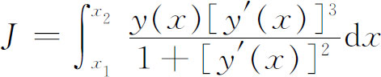
取最小值，这里y（x）表示绕x轴旋转生成曲面的曲线（图24.1）。这个问题（以及一般说来变分法问题的）的特点在于它提出了一个积分，它的值依赖于被积函数中出现的未知函数，而且要确定这个未知函数使积分达到极大或极小。
尽管牛顿在解法中采用了引进子午线弧y（x）的部分形状的改变这个想法——这几乎就是变分法的本质方法所包含的一切，但是牛顿的方法不是变分法的典型技巧，所以这里不去深入研究。重要的也许是，适合要求的y（x）的参数方程是
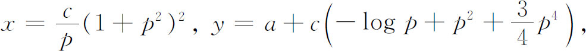
其中p是参数。关于这个工作，牛顿说：“我想可以把这个命题用到船舶的建造中去。”这种性质的问题不仅在船舶设计中而且在潜水艇和飞机的设计中都已经变得很重要了。
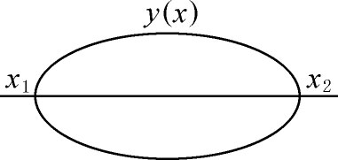
图24.1
在1696年6月的《教师学报》(1)上，作为向其他数学家的挑战，约翰·伯努利提出了现在著名的最速降线问题。这个问题是求从一给定点到不是在它垂直下方的另一点的一条曲线，使得一质点沿这曲线从给定点下滑所用时间最短。在P1处的初速度v1是给定的（图24.2），摩擦和空气阻力都忽略。用现代的方式来表达，这个问题就是要使表示下降时间的积分J取极小值，其中
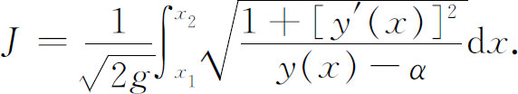
这里g是重力加速度而
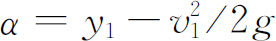
。这里仍然是选择被积函数中的y（x）使得J取最小值。伽利略（1630年和1638年）曾系统地表述而错误地解决过这个问题，他给出的答案是圆弧。正确的答案是联结P1和第二点P2的上凹的唯一的旋轮线，母圆滚动的直线l必须在给定的下落初始点的上方正好在y＝α的高度上。于是有且只有一条旋轮线通过这两点。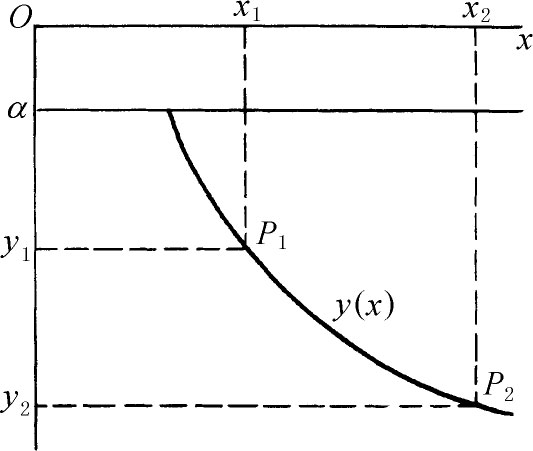
图24.2
牛顿、莱布尼茨、洛必达、约翰·伯努利和他的哥哥詹姆斯·伯努利求得了正确的解答。所有这些解法都发表在1697年5月的《教师学报》上。伯努利兄弟的解法值得进一步解释。约翰·伯努利的方法(2)是看出了最速下降路径是和光线在具有适当选择过的变折射率
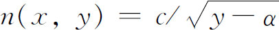
的介质中所取的路径相同的。在不同介质交界面处的折射定律［斯内尔（Snell）定律］是已知的，所以约翰·伯努利把介质分成有限个数的层，从一层到另一层折射率有明显的变化，然后让层数趋于无穷。詹姆斯·伯努利的方法(3)麻烦得多而且更为几何化。但是詹姆斯·伯努利的方法也更一般化，而且是在变分方法的方向上迈出的一个较大的步伐。通过惠更斯和其他人关于钟摆问题的工作（第23章第5节），旋轮线（cycloid）已经是众所周知的了。当伯努利兄弟发现旋轮线也是最速降线问题的解时他们感到惊奇。约翰·伯努利说(4)：“我们的确佩服惠更斯，因为他第一个发现一个重质点不论起点怎样，总以相同的时间描出一条旋轮线。但是当我说正是这同一条旋轮线——惠更斯的等时曲线——就是我们正在寻求的最速降线的时候，你们将感到惊奇。”
另一类重要的问题是要求测地线，即曲面上两点间长度最短的路径。如果曲面是平面，那么涉及的积分是
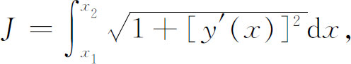
而且答案当然是一段直线。18世纪最使人感兴趣的测地线问题与地球表面上的最短路径有关，虽然数学家们相信地球表面是某种形状的椭球面，而且很像一个旋转椭球面，但是人们并不知道地球表面的确切形状。早先提到的（第23章第7节）关于测地线的早期工作没有用到变分法，但是特殊的方法显然不足以解决一般的测地线问题。
在分析上，到现在为止提出的问题都属于形式
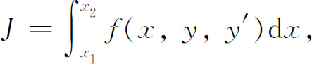
而且要寻求从
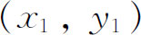
到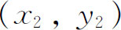
的y（x），使J达到极大或极小。另一类问题称为等周问题，在17世纪末也进入到变分法的历史中来了。这类问题的先驱——在给定周长的所有封闭平面曲线中求一条曲线，使得它所围的面积最大——可以追溯到希腊以前的时代。有一个故事说：古代提尔（Tyre）的腓尼基（Phoenician）城的公主迪多（Dido）离开自己的家园定居在北非的地中海沿岸。在那里她指望得到一些土地，并且同意付给一笔固定的金额来换取用一张公牛皮能围起来的土地。精明的迪多把公牛皮切成非常细的条，把条和条的端点结起来再去围出一个面积，其周长正好等于这些牛皮条的总长。而且她选的土地都是靠海的，所以沿海岸不用牛皮条。根据传奇所载，迪多决定牛皮的总长应围成一个半圆——围出最大面积的正确形状。除了芝诺多罗斯（Zenodorus）的工作以外（第5章第7节），直到17世纪末，对等周问题实际上没有做什么工作。在1697年5月的《教师学报》(5)中，詹姆斯·伯努利提出了一个包含几种情形的相当复杂的等周问题，向他弟弟挑战并使其弟弟为难。对于完满的解，詹姆斯·伯努利甚至愿给约翰·伯努利一笔50个金币的奖金。约翰·伯努利给出了几种解法，其中之一是在1701年得到的(6)，但都是错误的。詹姆斯·伯努利给出了一个正确的答案(7)。兄弟俩为各自解法的正确性而争论着。事实上，就像在最速降线中的情形一样，詹姆斯·伯努利的方法是朝着不久就要形成的一般技巧前进的一个重大步骤。1718年约翰·伯努利(8)大大地改进了他哥哥的解法。
分析地说，基本的等周问题是这样提出的。容许曲线用参数表示为
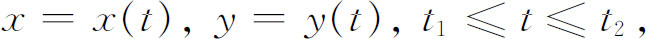
又因为它们都是闭曲线，故
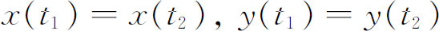
。而且曲线都不能自交。于是等周问题就是要求确定x（t）和y（t），使得弧长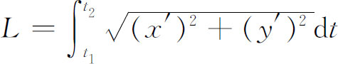
等于给定的常数而且使面积积分
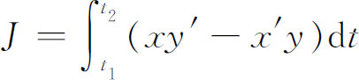
取极大值。这种等周问题有两个新的特征。一是利用了参数表示，但这不是主要的。另一是出现了L必须等于常数这样一个辅助条件。
詹姆斯·伯努利在1697年5月的《学报》上提出了另一类问题：决定曲线的形状，使得一个质点从给定点P1以给定的初速度v1沿这曲线滑向一条直线l的任一点（图24.3）时所花的滑动时间最小。这个问题和前面的问题不同之处在于容许曲线不是从固定点伸向另一固定点，而是从一固定点到某条直线。由詹姆斯·伯努利在1698年的《学报》上给出的这个问题的答案（尽管约翰·伯努利在1697年就有了这个解，但他没有发表）是一条与直线l正交的旋轮线弧。后来这个问题被推广为l是任意给定的曲线，给定点P1改成给定的另一曲线，从而问题就是要决定从一条给定曲线上的某一点到另一条给定曲线上某点的一条路径，使质点沿这条路径滑动所需的时间最少。这类问题叫做“具有变动端点的问题”。
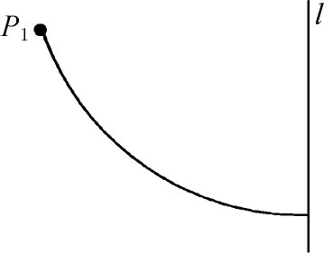
图24.3